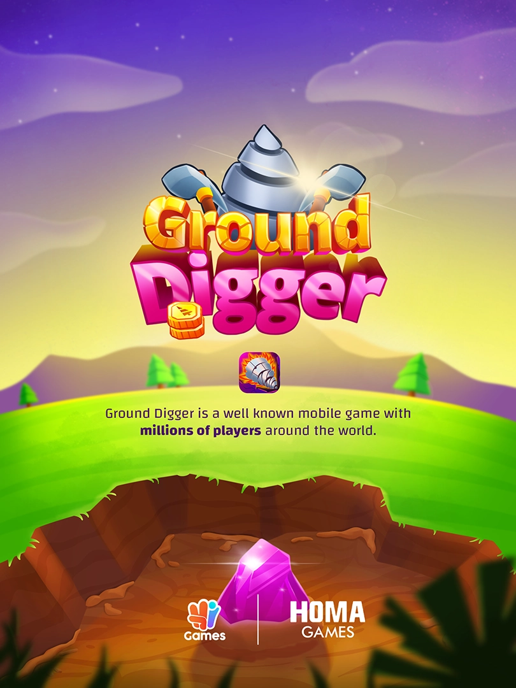

I was responsible for 2D art which is illustrations, textures, animations, interface design, VFX etc. Development has gone further, not all the assets are my making in the current app. The game was developed by Metin Çetin  and 3D assets were created by Pınar Bakırcı
and 3D assets were created by Pınar Bakırcı  . Fatih Karaosman, Gülden Kaya, Tolga Işıldar, Furkan Bice, Ezgi Ergin, Efe Küçük and many people from Homa Games contributed to the project.
. Fatih Karaosman, Gülden Kaya, Tolga Işıldar, Furkan Bice, Ezgi Ergin, Efe Küçük and many people from Homa Games contributed to the project.
Procreate, Illustrator, digital illustration, interface design, animation, February 2022